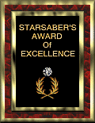

The Center for Teaching & Learning, one of the units in the Office for Professional Development, opened in November 1994 dedicated to the professional development of IUPUI faculty. The Center exists to provide faculty with assistance in their quest for self-improvement. More specifically, it is designed to provide an opportunity to explore new avenues of teaching; develop new courses or redesign existing ones; test new methods and delivery systems; create new ways to utilize technology to enrich teaching, research, and service; and encourage discussion and sharing of these methodologies.
We welcome walk-ins, although reservations are encouraged so that consultants and resources may be ready for your project/visit. Additionally, The Center staff will tailor consultations/workshops to the specific needs of IUPUI schools or departments, and if desired, will hold the consultation/workshop at your location. Ideas for new offerings are always welcome.
Here's How to Contact Us
E-Mail: The IUPUI Center for Teaching &
Learning
Visit: Monday through Friday, 8:30 a.m. to 5 p.m., University Library 1125
Call: 317-274-1300
Fax: 317-278-0241
In the event the University Library building closes earlier than the above hours, the Center will observe the closing time posted by the Library.
Associated Web Sites
Associate Faculty Office
Copyright Management Center
CyberLab: advanced research and
development laboratory
IUPUI University Library
Office for Professional
Development
Office for Women
University Information Technology
Services
Recognitions for Center Web
| award for providing and maintaining valuable
educational content
|
|
|
presented by Nielson Web Sites and
Business Graphics |
 presented
to sites that excel in design and content
|
Last Updated:
Copyright ©
2000-2002 - The Trustees of Indiana
University